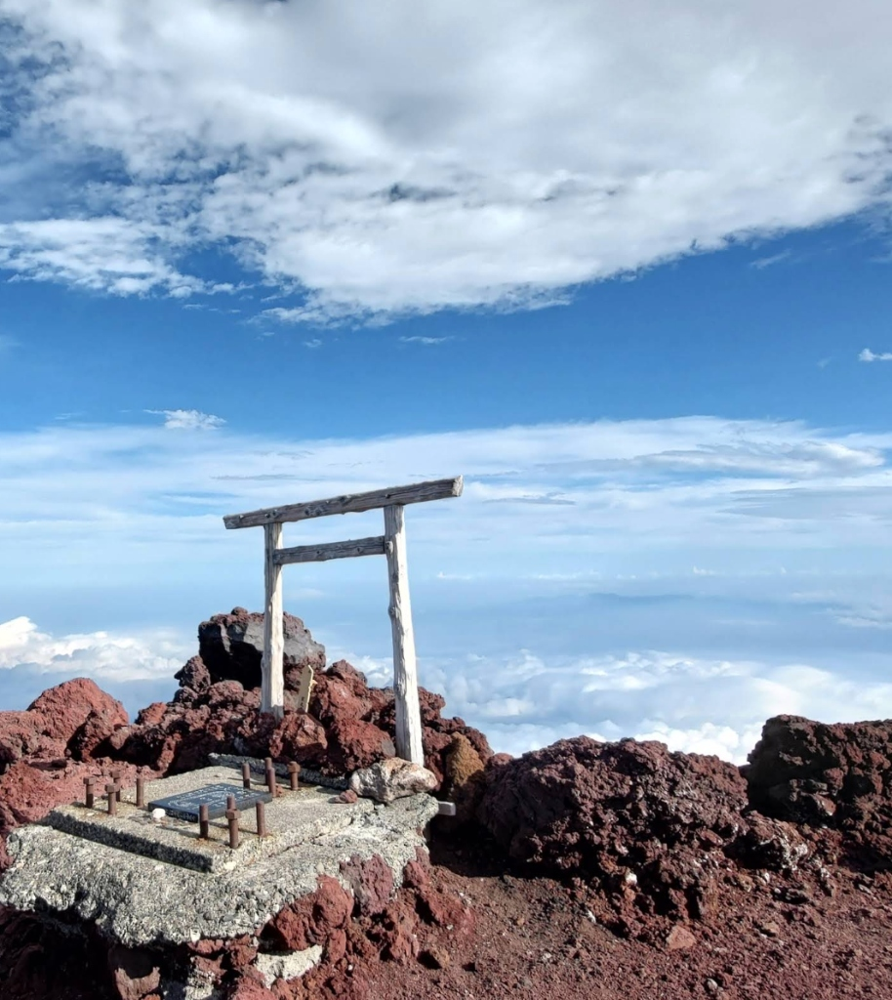
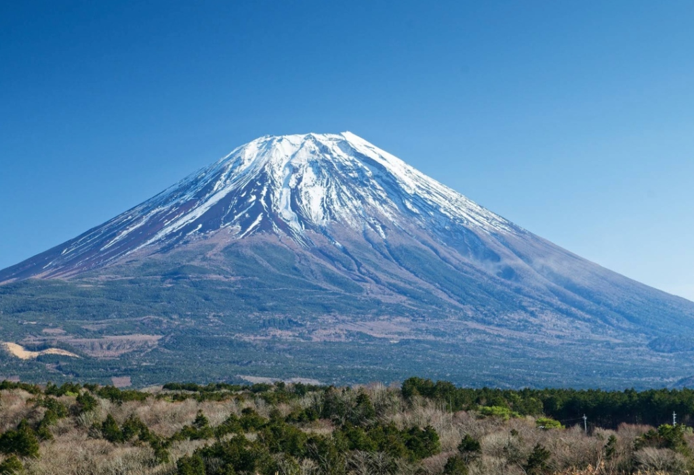

MICHELIN 1★ ｜ 獵師料理

Restaurant TOYOSHIMA
主廚豐島雅也擁有獵師執照，親自深入富士山林採集野生香草與獵捕蝦夷鹿。以正統法餐技法演繹甲州風土，炭燒鹿肉佐松針莓果醬汁令人驚豔，搭配山梨頂級自然派葡萄酒。
Read More ⟶
在古代日本，富士山並非浪漫明信片上的美景，而是一座噴吐黑煙與滾燙熔岩的「怒火之神」。古人為了平息神祇之怒，於山腳設立淺間神社進行遠拜。
直到江戶時代，修行者長谷川角行於本栖湖畔洞窟苦修，開創了名震全日本的「富士講」。千千萬萬的庶民身披白衣，在晨光中踏上本栖湖畔，尋求洗滌罪孽後的起死回生。
查看 3 日靈性漫步路線 ➔
本栖湖水深達 121 公尺，是富士五湖中最深、透明度最高的湖泊。西元 864 年貞觀大噴發，滔滔熔岩將古代的「剗之海」一分為三，留下了深邃幽藍的本栖湖。
這裡的湖水歷經數十年玄武岩層層天然過濾，水溫長年維持於低溫，清澈見底。日幣千圓紙鈔背後的「逆富士」絕景，正是岡田紅陽於此處按下快門的永恆傑作。
預約湖區私人接駁包車 ➔
主廚豐島雅也擁有獵師執照，親自深入富士山林採集野生香草與獵捕蝦夷鹿。以正統法餐技法演繹甲州風土，炭燒鹿肉佐松針莓果醬汁令人驚豔，搭配山梨頂級自然派葡萄酒。
Read More ⟶
嚴選高海拔契作蕎麥，使用過濾八十年的富士玄武岩冰川湧水每日清晨現打。十割蕎麥香氣濃烈，搭配現磨靜岡真山葵與酥脆炸野菜天婦羅，清甜沁脾，每日限量售完為止。
Read More ⟶
將清冽泉水飼育的甲斐鮭魚、甲州葡萄酒牛以岩燒高溫炙烤，佐以富士山特產舞茸土瓶蒸與旬令蔬菜。獨立面湖包廂私密性極高，每一道料理都是視覺與味覺的四季詩篇。
Read More ⟶早晨搭乘私人專車自東京出發，直達新倉山淺間公園避開擁擠人潮。中午於「石原手打蕎麥」品味冰川湧水麵，下午入住河口湖正對富士山第一排的極上旅宿，於客房私人露天風呂洗淨塵囂。
清晨 05:30 抵達本栖湖划槳迎接破曉逆富士。午後跟隨地質導覽員穿戴頭燈進入樹海熔岩冰穴，夜宿日本首間奢華露營度假村「星野富士」，在紅松林露台圍著營火享用 Dutch Oven 鑄鐵鍋鹿肉料理。
漫步西湖療癒之里根場的傳統水車水畔，親手體驗和紙手漉工藝。中午前往米其林一星「Restaurant TOYOSHIMA」品嚐極致山林旬味，下午由專用司機平穩接駁返回東京市區或機場。
「春櫻浮水、深冬落雪。我們出發，只為記下日本每一次光影與心跳。在天地盛開與枯榮之間，讓腳步慢下來，遇見最初的自己。」
“Encountering Japan with you, one quiet season at a time.”